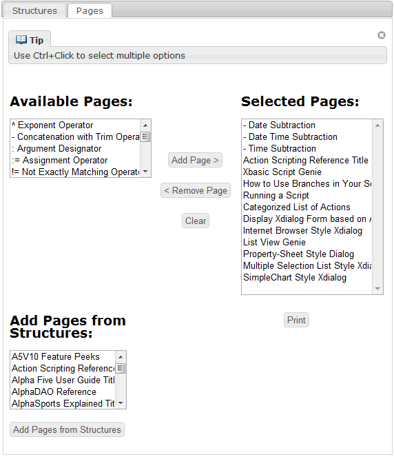

How to print multiple Wiki pages
If you'd like to print or save multiple Wiki pages for your own use, click on the top link in the Print Pages box in the right-hand column of your Wiki page. The copy below is live as well.Print Pages
Alternatively, you can just click here.
Once you're on the Print Multiple Pages screen, you can build your own collection of pages for streaming. The existing Structures in the Wiki make it painless to download or print things like "What's New in Version 10". The Find box at the top of the page lets you filter page names to, say, include only names that include "form".
Once you've constructed your ebook, in the Selected Pages list box, press Print to stream all of the ebook as a single HTML page.

You can then use the Print (usually Ctrl-P) function in your browser to actually send the ebook to your printer, or use the Save Page function in your browser to save the ebook as a complete web page. You can also copy the ebook from the browser into Word, and save it as a DOC, DOCX, PDF, or any other supported format.